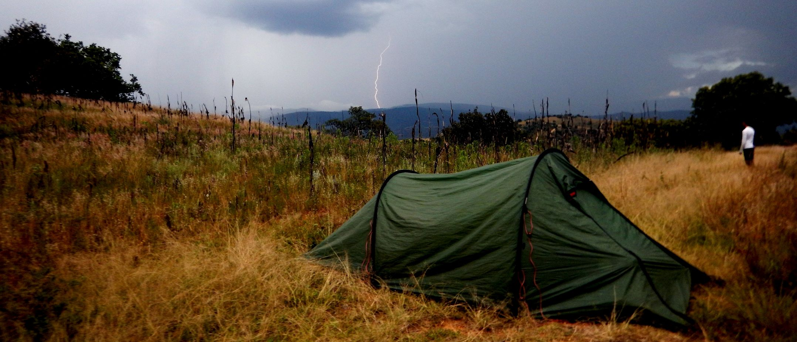
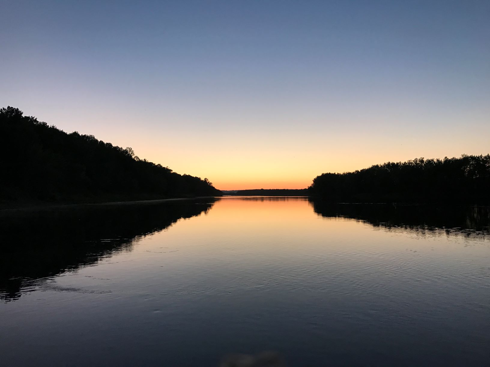
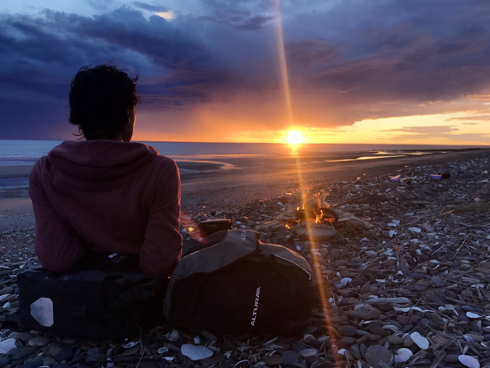
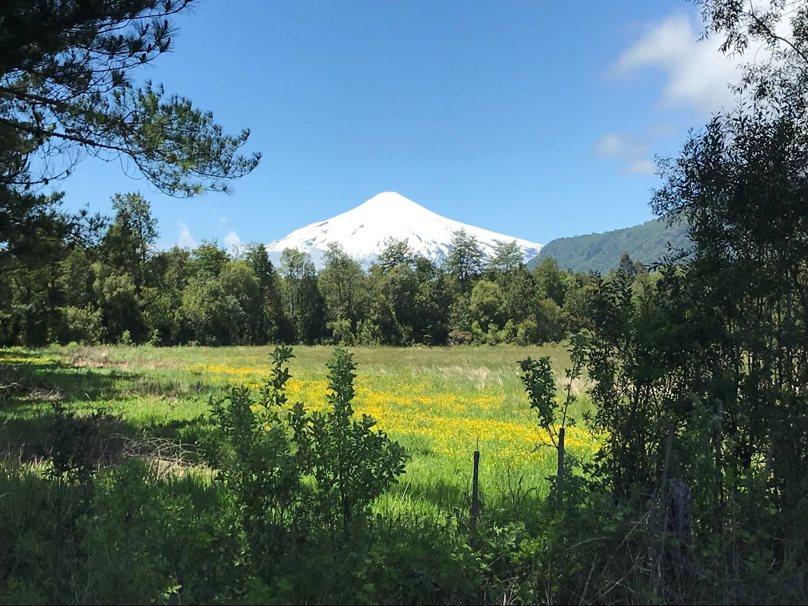
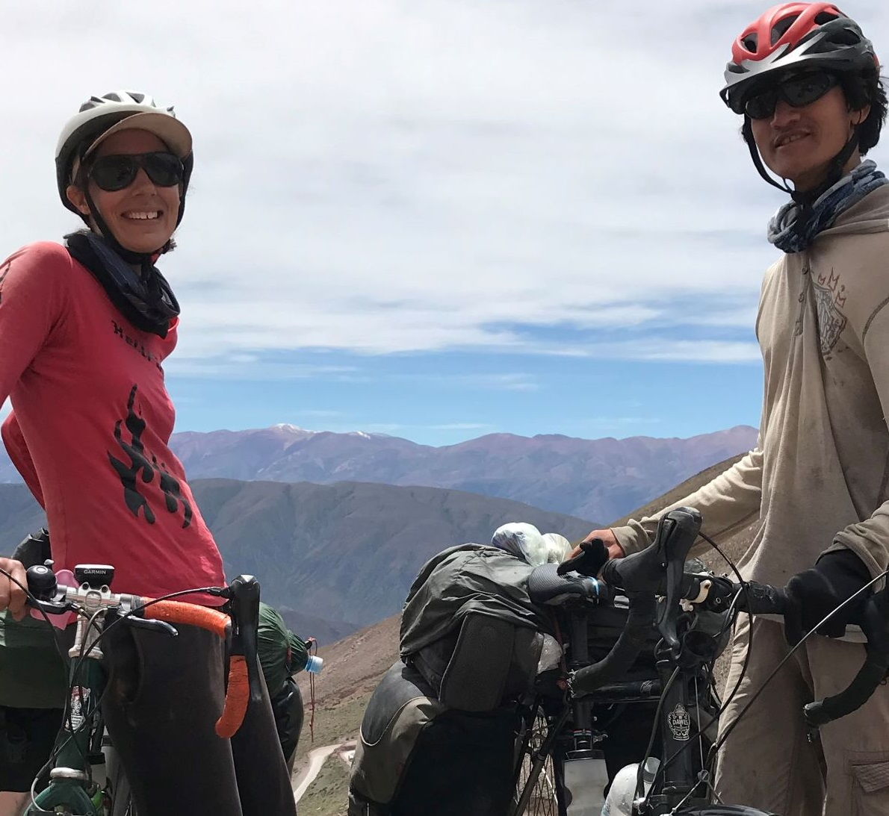
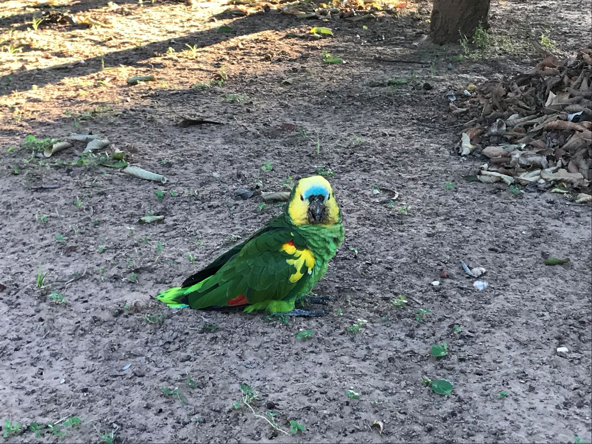
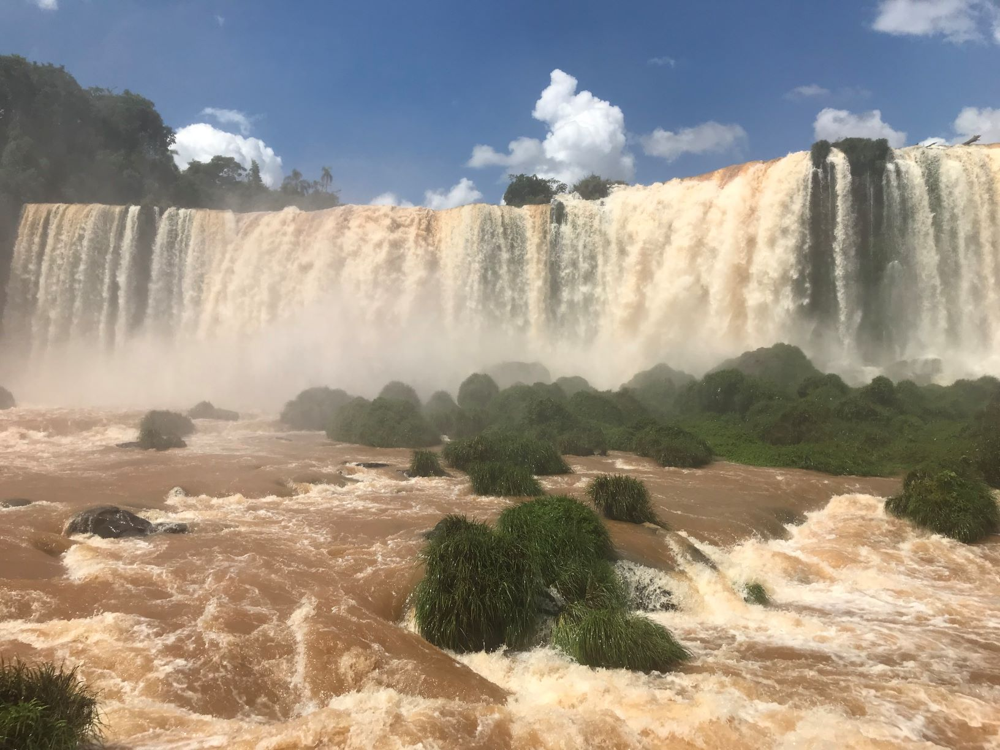
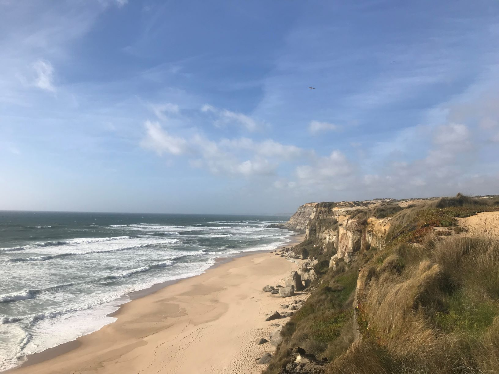
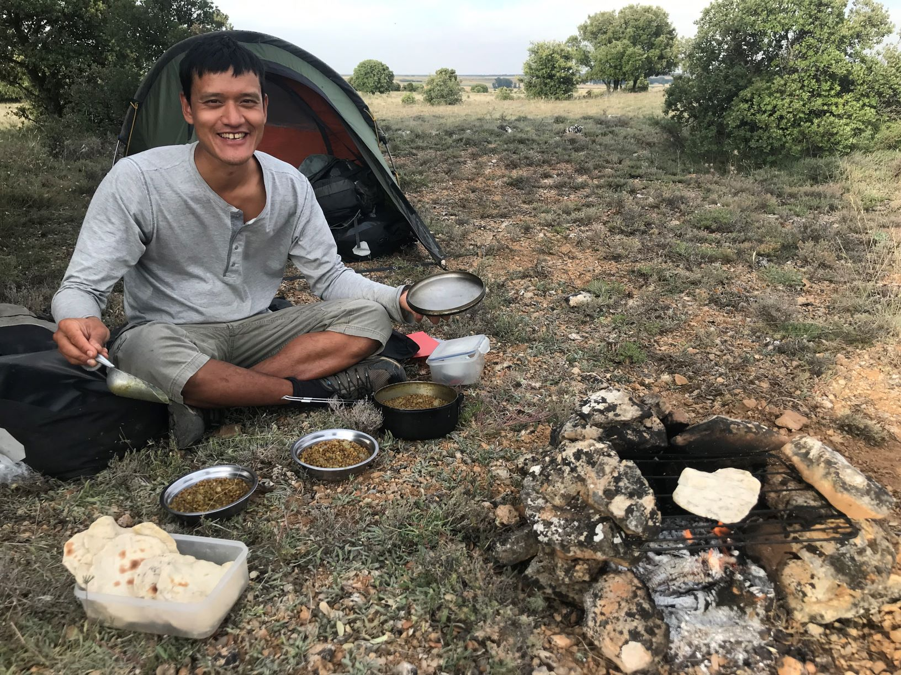
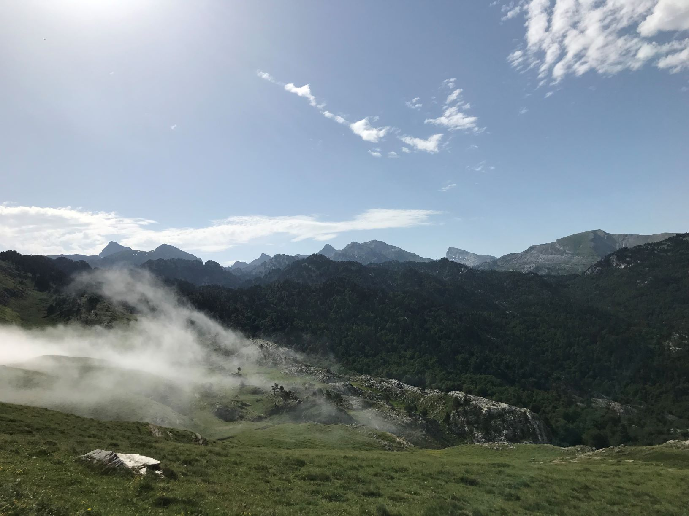

Our Canada and South America trip
My fiance Ruby and I spent 1 year travelling around Canada and South America by bicycle If you would like to find out about her previous trip cycling around the world you can visit her blog hereCanada

Canada is the second largest country in the world in area (after Russia), occupying roughly the northern two-fifths of the continent of North
America. Despite Canada's great size, it is one of the world's most sparsely populated countries. We spent 2 months cycling in Canada starting in Toronto th
heading east through Ontario, Quebec, New Brunswick finally flying to Argentina from Halifax in Nova Scotia. We had to hang our food from tree's while we slept
so not to attract any bears. We discovered some amazingly friendly and generous people and butter tarts.
Argentina

Argentina is a vast country located in the southern part of South America. The eighth largest country in the world, it is the second largest
country in South America after Brazil, and it's about one-third the size of the United States. Argentina is bordered by the Andes Mountains and Chile to the
west with the atlantic ocean to the East. In between are hundreds and hundreds of kilometers of dry unihabited land. We spent the majority of our trip in Argentina
even returning after spending 3 weeks in Chile. We fell in love with the vastness of the land, the kindness its people and its many mountains and coasts.
Chile

Chile is one of South America's most stable and prosperous nations. It hasn't always been, especially not during the 17-year rule of General
Augusto Pinochet, whose 1973 coup was one of the bloodiest in 20th-century Latin America and whose dictatorship left more than 3,000 people dead and missing.
It is 4,300 km long and only 350km at its widest. The worlds driest desert lies to it north, and we crossed the Andes to its East. We spent 3 days camping in
the andes inbetween Argentina and Chile before crossing the border and descending into Chile and towards the Pacific Ocean.
Bolivia

Officially known as The Plurinational State of Bolivia, a completely landlocked country bordered by Chile, Paraguay, Argentina, Peru and
Brazil. Bolivia lost access to the Pacific Ocean to Chile and became, along with Paraguay, one of the two landlocked states in the Americas. Although, Chile currently
allows Bolivia duty-free access to the port of Arica in the north of Chile. Boliva was one of he toughest countries to cycle through due to its many high altitude
passes, terrible road conditions and lack of towns/population in parts. However, it was these very reason that Boliva was the most memorable of the countries we cycled
through. We camped at 4000m altitude surrounded by nothing but cows.
Paraguay

Landlocked Paraguay surrounded by Argentina, Bolivia and Brazil. Most of the population is of mixed Spanish and Guarani descent, for this
reason there are two national languages; Guarani and Spanish. The Chaco war was fought between Bolivia and Paraguay over control of the El Chaco region, which was thought
to be rich in oil. It was the bloodiest military conflict fought in South America during the 20th century, between two of its poorest countries. Paraguay ended up winning
the war mainly due to the Bolivian milatary dying of thirst crossing the extremely arid El Chaco region, which gave the war its name "The War of Thirst" ("La Guerra de la Sed").
Cycling across this region was certainly an experience, if not a very long and flat one.
Brazil

Brazil is the largest country in South America and the fifth largest nation in the world. It forms an enormous triangle on the eastern side of
the continent with a 4,500-mile (7,400-kilometer) coastline along the Atlantic Ocean. It has borders with every South American country except Chile and Ecuador. We entered from
The Triple Frontier (Spanish: Triple Frontera, Portuguese: Tríplice Fronteira), a tri-border area along the junction of Paraguay, Argentina and Brazil, where the Iguazú and Paraná
rivers converge. Near the confluence are the cities of Ciudad del Este (Paraguay), Puerto Iguazú (Argentina) and Foz do Iguaçu (Brazil). We spent 6
weeks cycling to Rio De Janero and really only barely scratched the surface of this mammoth sized country.
Portugal

Portugal lies along the Atlantic coast of the Iberian Peninsula in south Western Europe. It shares a border with Spain in the east and north, while the
Atlantic dominates the coastline in the west and south. The coastline of Portugal is extremely touristy and a very popular holiday destination for Europeans so for that reason we headed
inland after flying into Lisbon. The mainland parts of Portugal were absolutely charming. Much quieter, very easy to camp and full of very old towns with very old inhabitants. We enjoyed
many espressos and many pastel de natos (custard tarts).
Spain

The word Spain originated from the Roman name "Hispania". The second largest country in Europe, which is located in an area known as the
Iberian Peninsula, which it shares with Portugal. This island is surrounded by the Mediterranean Sea in the south to the east, Atlantic Ocean to the west and the Bay of Biscay to the north.
A land steeped in heritage, we spent alot of it on trails rich with castles and churches. Paths walked by Don Quixote himself (if he wasn't fictional) and pilgrims. We into Madrid from Portugal
then headed north towards the Pyrenees.
France

France, the largest country in Western Europe, has long been a gateway between the continent's northern and southern regions. Its lengthy borders touch 6 different
countries in Europe (Belguim, Germany, Luxembourg, Switzerland, Italy and Spain), the Atlantic Ocean in the west and the Pyrenees Mountains in the south. After acsending the Pyrenees in Spain
we descended into the cold, wet weather of France, but luckily the weather improved drastically once we were outside of the mountainous climate. France is extremely cycle friendly with many many
cycle networks. We barely spent any time in traffic preferring the extremely well maintained cycle paths instead.